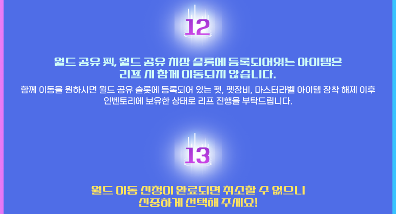
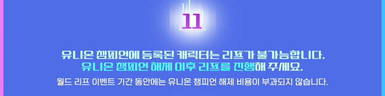
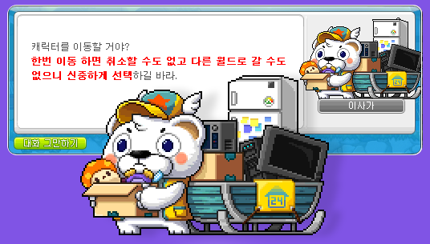

메이플 월드 리프 준비 순서, 11월 5일 10시 전에 해둘 것
메이플 월드 리프 마감까지 오늘(10월 25일) 기준으로 11일 남았어요. 이벤트가 2026년 11월 5일(목) 오전 10시에 끝나는데, 한 번 신청하면 취소가 안 되다 보니 뭘 먼저 하고 뭘 나중에 해야 하는지가 제일 헷갈리더라고요. 공식 안내가 세로로 긴 그림 한 장이라 순서 잡기가 힘들어서, 필요한 것만 차례로 풀어 봤어요.
순서만 먼저 적으면 ① 월드 공유 슬롯의 펫·펫장비 장착 해제 → ② 창고·캐시 보관함 비우기 → ③ 유니온 챔피언 해제 → ④ 놓치기 쉬운 것 점검 → ⑤ NPC 이사가에서 신청이에요. 공식이 정해 준 순서는 아니고, 막히는 것부터 먼저 풀도록 제가 묶어 봤어요. 공식은 상황에 따라 이벤트가 조기 종료될 수 있다고도 밝혀 뒀으니 여유 있게 움직이시는 게 좋아요.
신청 전에 월드 쌍이 고정이라는 건 알고 가야죠
월드 리프는 처음 고른 출발·도착 월드 한 쌍으로만 이동할 수 있고, 메이플ID 안의 모든 캐릭터에 똑같이 적용돼요. 스카니아에서 제니스를 골랐다면 다른 캐릭터도 스카니아에서 제니스로만 갈 수 있다는 뜻이에요. 대상은 10월 22일 0시 이전에 만든 101레벨 이상 캐릭터이고, 제로는 스토리 퀘스트 챕터2를 끝낸 캐릭터만 해당돼요.
| 월드 | 출발 | 도착 |
|---|---|---|
| 스카니아, 루나 | 가능 | 불가 |
| 엘리시움, 크로아, 베라, 오로라, 제니스, 유니온, 이노시스, 레드, 아케인, 노바 | 가능 | 가능 |
| 에오스, 핼리오스 | 둘 사이로만 이동 (에오스에서 오로라로는 불가) | |
공식 안내 그림의 월드 이동 표를 정리한 거예요.
스카니아·루나에서 출발한다면 도착 월드가 이번 신청에서 제일 큰 결정이에요.
월드 공유 슬롯 펫은 왜 제일 먼저 풀어요?
월드 공유 펫·월드 공유 치장 슬롯에 등록된 아이템은 리프할 때 같이 이동하지 않아서, 펫·펫장비·마스터라벨 아이템 장착을 풀어 인벤토리에 둔 채로 리프해야 해요.

12번 카드가 펫 이야기이고, 바로 아래 13번이 취소 불가 안내예요.
안내창 주의사항 14번에도 같은 얘기가 나와요. 월드 공유 펫 슬롯이나 치장 슬롯에 착용 중인 아이템은 현재 월드에 그대로 남는다고 하니, 펫을 데려가고 싶다면 착용부터 풀어야 하는 거죠. 이게 맨 앞인 이유는 NPC도 퀘스트도 필요 없이 혼자 할 수 있는 작업이라 먼저 끝내 두면 마음이 편하고, 풀린 펫과 장비가 인벤토리 칸을 차지하기 때문이에요.
창고·캐시 보관함은 비우고 유니온 챔피언은 풀어야 해요
창고와 캐시 보관함에 둔 아이템은 이동하지 않으니 리프 전에 인벤토리로 옮겨 두고, 유니온 챔피언에 등록된 캐릭터는 해제해야 리프를 할 수 있어요.
9번 카드예요. 창고도 캐시 보관함도 알아서 따라오지 않아요.
방금 풀어 둔 펫·펫장비에 이 아이템들까지 전부 인벤토리로 모이니, 칸이 모자라면 쓸 일 없는 걸 먼저 정리해 두는 게 좋겠죠.
유니온 챔피언은 순서상 마지막이지만 시한이 있는 항목이에요. 챔피언에 등록돼 있으면 리프 자체가 불가능한데, 이벤트 기간(10월 22일 점검 후부터 11월 5일 오전 10시까지)에는 해제 비용이 부과되지 않거든요. 해제하는 메뉴 위치와 해제 뒤 다시 등록하는 규칙은 공식 안내 그림에 나와 있지 않아서, 인게임 안내창에서 확인하셔야 해요.

11번 카드예요. 해제 비용 무료는 이벤트 기간 한정이에요.
유니온 코인과 아티팩트를 일부라도 가져가고 싶다면 NPC 이사가에서 '유니온 리프 박스 만들기'를 해야 해요. 박스를 안 만들면 보유 유니온 코인은 같이 이동하지 않아요.
- 메이플ID당 1회만 만들 수 있고, 사용 기한은 11월 11일(수) 23:59예요.
- 코인은 최대 20,000, 아티팩트 포인트는 최대 10,000, 아티팩트 EXP는 30%까지 옮겨져요.
- 박스를 만들 때 코인·포인트가 차감되고 아티팩트 레벨과 EXP는 초기화돼요.
- 박스는 도착 월드에서 써야 해요. 기존 월드에서 쓰면 코인·포인트는 원래대로 돌아오지만 1회뿐인 사용 횟수는 그대로 차감돼 되돌릴 수 없어요.
- 101레벨 이상에, 퀘스트 '메이플 유니온의 시작'과 '신비한 힘의 아티팩트'를 끝낸 캐릭터라야 만들 수 있어요.
신청 직전에 놓치기 쉬운 건 표로 점검해요
신청 직전에는 추출이나 선택이 필요한 아이템과 길드·결혼·거래 상태를 한 번에 점검하면 돼요. 공식 안내 그림에서 놓치기 쉬운 것만 골라 표로 묶었어요.
| 항목 | 신청 전에 할 일 |
|---|---|
| 커스텀 배경, 마스터라벨 전투·성장 플러스 | NPC 이사가에서 '추출하기'를 하고 이동해야 해요. 추출 없이 리프하면 이후 사용할 수 없어요. |
| 솔 헤카테 스킨, 채팅 이모티콘 | 가져갈지 리프 과정에서 선택해요. 가져가면 기존 월드에서는 쓸 수 없고 도착 월드에서 자동으로 켜져요. |
| 결혼한 캐릭터 | 이혼 신청 후 24시간이 지나야 이혼이 완료되고, 그다음에 리프할 수 있어요. |
| 길드·연합 | 탈퇴(양도)한 뒤에 이동해요. |
| 홈페이지 쿠폰함 선물 | 리프하면 삭제되니 먼저 수령해요. |
| 메소마켓 거래 중인 메소·메이플포인트 | 이동하지 않으니 등록한 거래를 마친 뒤에 신청해요. |
| 커스텀 일러스트 의뢰 | 결과를 확인하지 않고 리프하면 기존 의뢰가 사라져요. NPC 미켈로빈치에게서 확인해요. |
| 링크 스킬·유니온 프리셋 | 일부 프리셋이 삭제되니 도착 월드에서 다시 확인해요. |
신청은 이벤트 리스트에서 '월드 리프' 참여하기를 눌러 헤네시스로 이동한 다음, NPC 이사가를 클릭하는 것부터 시작해요. 대화창에도 한번 이동하면 취소할 수도 다른 월드로 갈 수도 없다고 적혀 있어요.

이사가 대화창에도 한번 이동하면 취소할 수 없다고 적혀 있어요.
그다음은 운영자 주의사항 안내창을 읽고 '예'를 누르면 월드 리프 창이 열려요. 거기서 도착 월드를 고르고 가져갈 메소도 입력하는 순서예요.
건너뛰어도 되는 단계도 있어요. 월드 공유 슬롯에 펫이 없으면 펫 해제는 넘어가도 되고, 유니온 챔피언을 등록해 둔 캐릭터가 없으면 해제 단계도 필요 없어요. 유니온 코인은 월드를 넘어 따라가지 않으니, 가져갈 게 필요하다면 유니온 리프 박스를 쓰셔야 해요.
자주 묻는 질문
Q. 에오스·핼리오스 리프도 따로 할 수 있나요?
일반 월드 리프와 에오스·핼리오스 리프는 각각 따로 진행할 수 있어요. 에오스 캐릭터는 핼리오스로만, 핼리오스 캐릭터는 에오스로만 이동해요.
Q. 리프할 수 있는 캐릭터 수나 도착 월드 슬롯에 제한이 있나요?
캐릭터 수에는 제한이 없어요. 도착 월드에 빈 슬롯이 있으면 그 칸부터 쓰고, 모자라면 슬롯이 자동으로 늘어나요. 12슬롯 월드에 20개를 리프하면 8슬롯이 자동 확장돼 이동 후 20개가 되는 식이에요. 단 도착 월드에 이미 51개 캐릭터가 있으면 기존 캐릭터를 삭제해야 이동할 수 있어요. 신청 후 이동이 끝나기 전에 캐릭터 슬롯 쿠폰을 쓰면 확장이 먼저 반영되니, 리프 조회 메뉴에서 전원 이동 완료를 보고 쓰시는 게 좋아요.
Q. 퍼스널 버닝이나 버닝 부스터 효과를 받는 캐릭터도 리프돼요?
퍼스널 버닝, 하이퍼 버닝 MAX, 버닝 부스터 효과를 받는 캐릭터도 리프할 수 있어요. 복구 서비스를 신청해 둔 상태라면 복구가 끝난 뒤에 이동해야 해요.
Q. 가져갈 메소는 어떻게 하나요?
도착 월드를 고를 때 보유 메소를 확인하고 가져갈 메소를 직접 입력하는 방식이에요. 리프한 뒤 이사한 월드에서 통합 알림창의 '월드 리프 메소 받기'를 누르면 받을 수 있어요. 공식 안내에는 따로 없지만, 입력하지 않으면 못 가져가니 미리 입력해 두는 게 안전해요.
Q. 신청하고 나면 어디서 확인하고, 오래 걸리면 어떡해요?
캐릭터 선택창의 '월드 리프' 메뉴에서 신청 현황을 볼 수 있어요. 신청하면 로그인창으로 이동하고, 다시 접속하면 이동한 월드에서 확인돼요. 유저가 많이 몰리면 이동이 늦어질 수 있는데, 10월 22일 공지 기준으로 엘리시움·크로아는 신청이 잠시 안 되거나 이동에 40분 넘게 걸릴 수 있다고 안내됐어요(인벤 정리).
마감 전에 순서대로 끝내 두면 돼요
순서는 위에 적은 대로 가시되, 챔피언 해제만 무료 기간이 11월 5일 오전 10시까지니 마감 전에 꼭 확인해 두세요. 준비 잘 하셔서 무사히 이사하세요~
✔ 메이플스토리 같이 보기 좋은 내용
· 메이플스토리 강화코어 V매트릭스 활성화 강화 순서, V POINT 얻는 법부터 초기화까지
· 메이플스토리 퍼스널 버닝 켜는 법, 레벨대별 사냥터 4단계 총정리
· 메이플스토리 캐치! 티니핑 콜라보 판매기간·아이템 총정리
참고한 곳 (2026.10.25 기준)
· 메이플스토리 공식 이벤트 안내 - 월드 리프
· 메이플스토리 공식 업데이트 공지